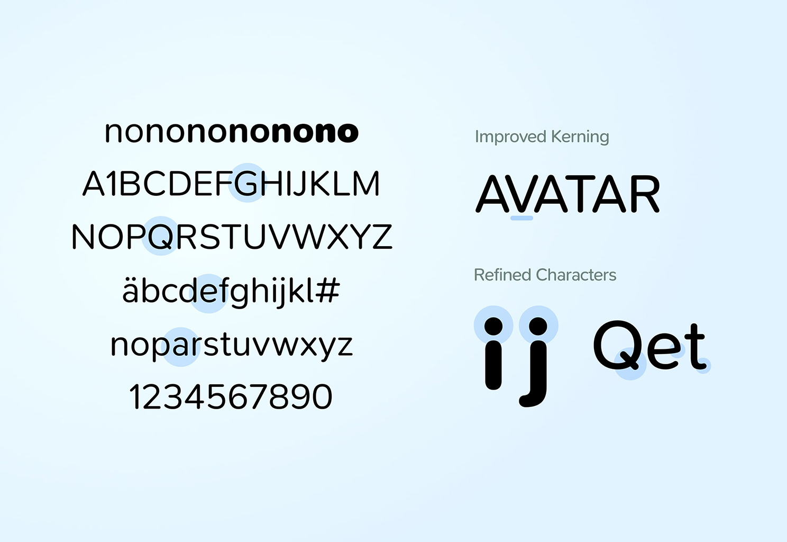
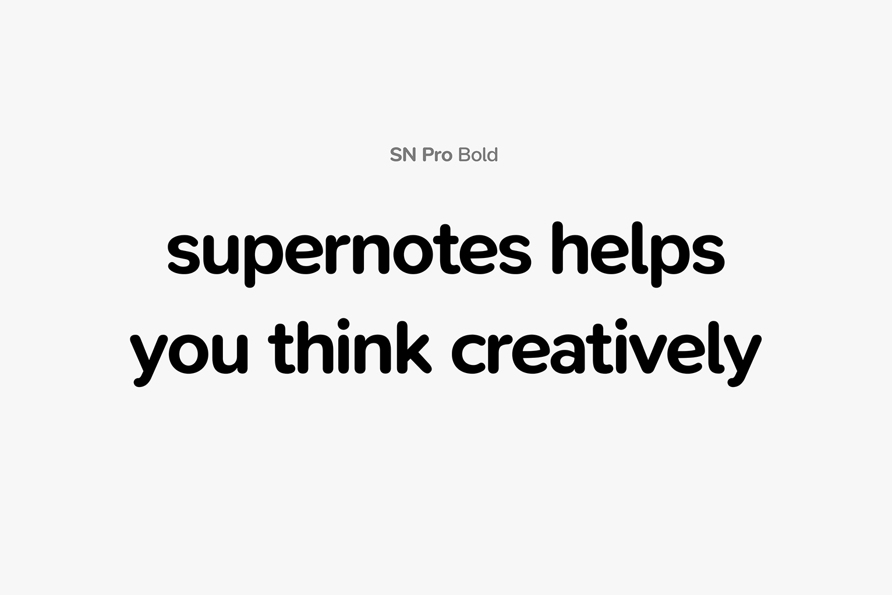
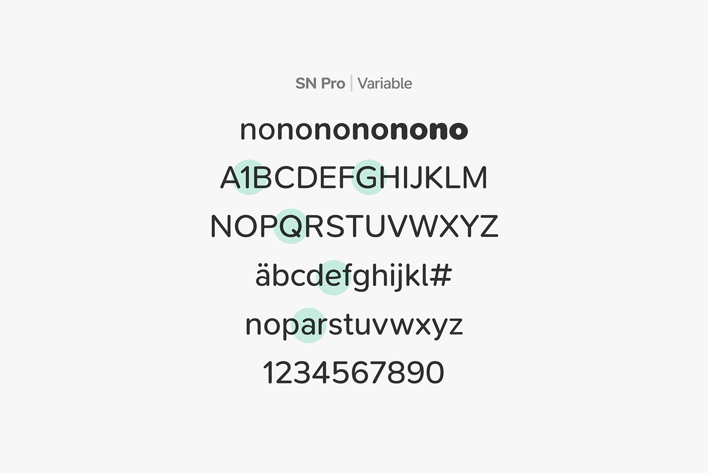
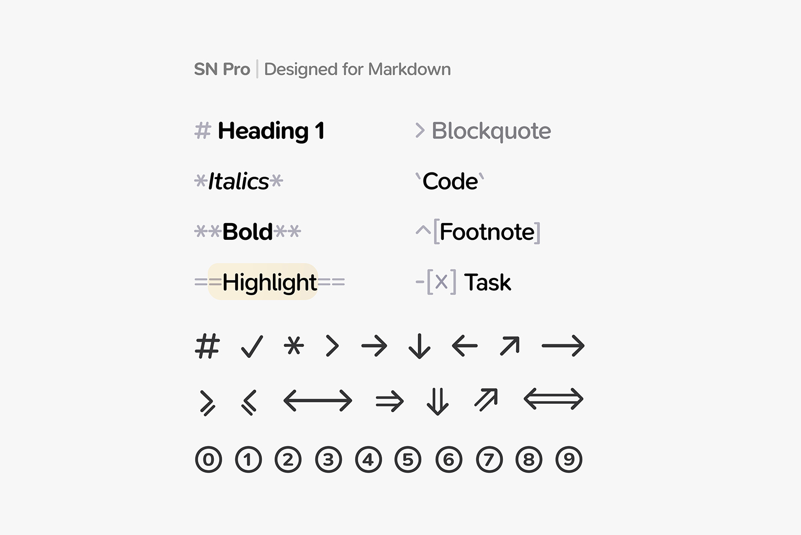
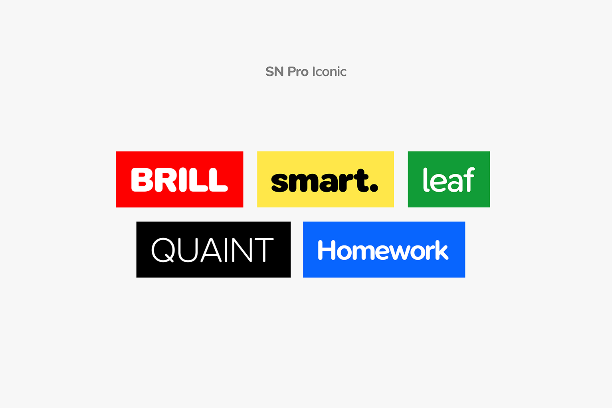
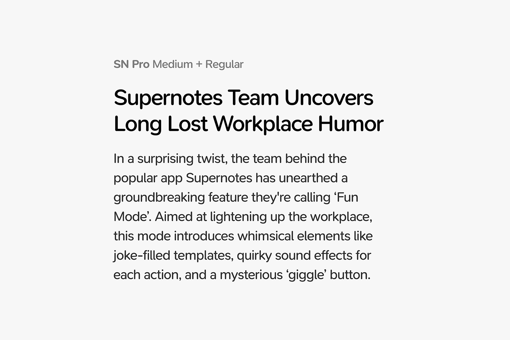

SN Pro is a friendly sans serif typeface optimized for use with Markdown. It is based on Nunito by Vernon Adams, and each character has been re-worked to improve readability and usability within a Markdown context. Originally designed by and for Supernotes.
To contribute, see github.com/supernotes/sn-pro
     